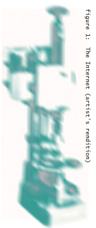

A decoded note from the Underground
Why the ënet is not like CB radios, TV or Disney World
We don't like Disney World. No, no. Let us rephrase that. We don't like the above-ground portions of Disney with those well-manicured pathways, perfectly maintained lawns and Technicolor buildings against a crisp, clear-blue sky.
Sure, Space Mountain can be exhilarating and the Haunted House is always a good time, but then what have you got? Rather, we prefer the side of Disney World we were once lucky enough to glimpse: the normally off-limits "backstage area."
In that underbelly of Fantasyland, we saw Goofy walk around without his over-sized head, smoking a cigarette. Mammoth industrial cooling pipes wound like snakes to destinations marked only by generic nameplates on whitewashed doors. The normally pleasant workers, crowded around a vending machine, scowled and complained about park politics. A young woman wearing a Metallica T-shirt and ripped jeans carrying a prim, lacy costume over her arms was getting a firm talking-to by a stern-looking supervisor. All of it fascinated us. We realized this was how the park really worked, on grit and agitation.
By far, that undiscovered country known as the underground always seems more interesting. Sometimes, simply due to it's unintentional, unmapped landscape designed with only function, not aesthetics, in mind. That's why we've decided to take you, the reader, through the Internet via this less trafficked pathway. To gain a different perspective, you have to look at something from another view.
When you think about it, no one really sees the exterior of the Internet anyway. Sitting bleary-eyed in the dim glow of our screens, we feel like we're simply wandering, glimpsing the programmed innards of one computer before bouncing onto another. What would all these small parts put together look like if they were assembled (see figure 1)? We like that the Internet seems a shapeless, shifting perpetual work in progress.
This ambiguity may be one of the reason the mainstream media has not quite figured out how to report on the Internet yet. Nor has Congress fully grasped how to respond. As usual, when either of those groups don't quite grasp something, yet view it as potentially dangerous, that entity is sensationalized and branded as "bad" before being properly investigated. We think we understand the way the world of the Internet functions, so we can be a little more responsible. One thing you'll never read in the Internet Underground will be scare stories about children and cyberporn. You will read about how a sex bulletin board service compares to a real call girl. Now that's worth investigating.

Many people compare the Internet to the embarrassing Citizens Band trend of the 1970s. With regret, we remember such grating movies as Convoy and Smokey and the Bandit or TV shows such as the loathsome Dukes of Hazzard. Everyone assumed a handle (even two of the IU staffers who were in elementary school during the craze). People drove around, talking to other people on the road, amazed by their ability to tap into a collective voice simply by depressing a button. But that was all we could get: voices drifting in fields of static, offering messages encoded in jargon. Rarely could you have an actual conversation; after all, everyone else was listening.
CB radio died for many reasons, but mostly because those small boxes were designed with only on purpose, allowing only for two-way audio communication. So after awhile, when the novelty wore off, most folks took down those odd, hefty antennas. Later, we as a nation shuddered at the thought they we were promoting the trucking culture, defined simply by guys who drove trucks, ate in diners and aged rapidly due to sleep deprivation.
People also compare the Web to television. But we ask, when you admire someone's TV show can you then get in touch with them almost immediately? On the 'net, however, you can just hit the "e-mail me" hyperlink. You can converse or make friends in public or private. One of our goals is to get into the minds of those who create this intimate space. Without people to create web pages, oversee newsgroups or maintain mailing lists, the Internet would be empty bandwidth.
That's why one of our first missions was to seek out the "Arbiters of Cool," those judges who help direct traffic to sites they deem good, bad or just plain useless. We learned Cool Site of the Day was predicted to last less than a month; now the site boasts 40,000 hits a day. Speaking of hits, we take on that issue too, examining just what makes up a "hit" and how some companies plan to police those claims in Netline, our news section.
In our cover story, John Hardin takes a look at the trouble with security on the 'net, prompted by the recent hacker inroads to the supposedly secure Netscape browser. He also examines the future generations of browsers, including Netscape Gold, VRML, Hot Java and Blackbird to offer a glimpse of what the Web will look like a year from now.
Each month, we plan to take a closer look at specific pages on the Web, talk to their creators and learn a little bit more than what's offered in the hyperlinks. This month, we learn how one man fooled a nation with a phony crime scene investigation -- he even bluffed ABC News. Showing the dexterity of the same medium, we also profile pages about the cultural impact of Pez and an Oklahoma City retiree who worked her fascination with Marilyn Monroe into a haunting narrative.
Mirksy, of Worst of the Web fame, joins our staff as a monthly columnist. In this issue, Mirsky sets out to find celebrities but falls a little short of his goal (you can find out more about Mirsky in our Arbiters of Cool section). Justin Hall, of the infamous Justin's Links to the Underground, also joins us to write our first 403 Forbidden column, named after the standard response one gets after trying to poke a browser where it doesn't belong. Hall, who helped launch HotWired, explains why sex-related sites get "shuttered" and offers an innovative solution.
We start each month's issue with the Net Top 10. This does not necessarily pinpoint the 10 absolute best web sites (as if anyone could ever quantify such a thing), but rather sites unearthed by the IU staff that we feel everyone really ought to check out. Weird on the Web features our picks for odd and unusual destinations. This month, we ended up finding such oddities such as the Nipple Server and a Shaman who offers spiritual healing over the phone lines.
In the '60s, one phrase rang out: "Tune in, turn on and drop out." In the '90s, a similar one may be coined as well. "Sign on, tune in and drop out." The drop out part refers to the hours spent in front of a computer, putting off that term paper, avoiding that laundry or actually talking to live people. Other magazines keep trying to sell you on the importance of the 'net to your daily life. Plan your trips! Check on your stocks! We believe firmly the Internet has value, no question. But sometimes, it's just a time suck, an addictive trap that hard to escape. No one knows that better than an IU staff member. We admit, there's no real reason to spend time reading the results of two college guys' experiments designed to learn whether Twinkies had intelligence. Well, there's one: It's fun and we like fun.
So we invite you to the Underground, including those of you who are new to the 'net. All kindred spirits are welcome here. You don't even need to learn a secret handshake. Just sign on, tune in and drop out...
From the Underground
 
|